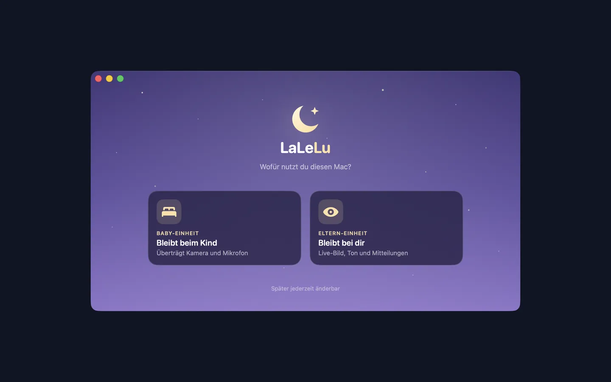

Niania elektroniczna. Widzisz tylko Ty.
LaLeLu zamienia Twojego iPhone’a, iPada i Maca w prywatną nianię elektroniczną z kamerą. Za darmo, bez subskrypcji, bez konta. Szyfrowanie end-to-end.
Na iPhone’a, iPada i Maca. Potrzebne dwa urządzenia Apple.

- Za darmo – 0 €
- Bez subskrypcji
- Bez konta
- Bez reklam
- Bez śledzenia
Niania z kamerą.
Wszystko za darmo.
Jedno urządzenie zostaje w pokoju dziecka jako jednostka dziecka, drugie jest jednostką rodzica. iPhone’a, iPada i Maca możesz łączyć dowolnie.
- Obraz i dźwięk na żywoPrzez Wi-Fi i poza domem przez internet mobilny.
- Widzenie w nocyEkran jednostki dziecka staje się lampką.
- Alarm przy płaczu na urządzeniuJako powiadomienie, także przy zablokowanym ekranie.
- Rozmowa z dzieckiemJednym przyciskiem, bez wstawania.
- Dźwięki do snu z timeremSzum, deszcz i morze.
- Historia aktywnościZostaje lokalnie na Twoim urządzeniu.
Światło gaśnie.
Widzenie w nocy działa.
Jednostka dziecka zostaje w ciemnym pokoju. W trybie nocnym jej ekran jest prawie czarny, a transmisja trwa dalej.
Dzięki widzeniu w nocy ekran staje się delikatną lampką, czerwoną lub białą. Czerwone światło zwykle mniej zakłóca sen.
Widzenie w nocy włączysz i wyłączysz też z iPhone’a, bez wchodzenia do pokoju.


Dziecko płacze.
Twój iPhone wie.
Rozpoznawanie płaczu działa w całości na jednostce dziecka, dzięki Apple SoundAnalysis. Gdy usłyszy płacz lub kaszel, dostajesz powiadomienie push, nawet przy zablokowanym ekranie. Żaden dźwięk nie trafia przy tym do chmury.

Cichutkie słowo.
Bez wstawania.
Przytrzymaj „Mów”, a Twój głos usłyszy pokój dziecka. Puść, i znów jest cicho.

Wypróbuj: przytrzymaj „Mów”.
Szum włączony.
Timer odlicza.
Biały, różowy i brązowy szum, a do tego deszcz i morze. Dźwięki włączasz wygodnie z iPhone’a.
Timer działa na samej jednostce dziecka i łagodnie wycisza dźwięk, nawet jeśli iPhone na chwilę straci połączenie.
Wybierz 15, 30, 45 lub 60 minut albo tryb bez końca.
Twój stary Mac
dostaje nową pracę.
Postaw go w pokoju dziecka: z wbudowaną lub podłączoną kamerą staje się jednostką dziecka. Twój iPhone jest jednostką rodzica.


1–2 sekundyTak szybko zwykle łączy się w domu. Poza domem przez internet mobilny często w kilka sekund.
Łącz dowolnieiPhone, iPad lub Mac w pokoju dziecka, iPhone lub iPad przy Tobie. Jako jednostka dziecka wystarczy stary iPhone.
Dla obojga rodzicówKilka jednostek rodzica może być połączonych jednocześnie, także z różnymi Apple ID.
Prywatność niani:
nikt nie podgląda.
- Szyfrowanie end-to-end.
- Obraz i dźwięk trafiają bezpośrednio między Twoimi urządzeniami (WebRTC, DTLS-SRTP). Obraz widzą tylko urządzenia, które sam sparowałeś.
- Nigdy nie nagrywane.
- Obraz i dźwięk nie są zapisywane na żadnym serwerze ani na stałe w aplikacji.
- Rozpoznawanie na urządzeniu.
- Analiza dźwięku odbywa się lokalnie dzięki Apple SoundAnalysis. Żaden dźwięk nie trafia do nas.
- Bez konta, bez reklam, bez śledzenia.
- Do parowania wystarczy Twój istniejący dostęp do iCloud.
Uczciwie: do nawiązania połączenia i wysłania alarmu LaLeLu korzysta z Apple (iCloud, push) i Cloudflare. Co jest przechowywane i jak długo, opisuje w całości polityka prywatności (po angielsku).
Niania elektroniczna bez subskrypcji i bez konta
Wiele aplikacji typu niania elektroniczna wymaga subskrypcji, osobnego zakupu na każde urządzenie albo własnego konta. LaLeLu nie.
| Kryterium | LaLeLu | Typowe aplikacje |
|---|---|---|
| Cena | Za darmo, na wszystkich urządzeniach | często subskrypcja lub zakup na każdą platformę |
| Konto / rejestracja | Brak, do parowania wystarczy Twój istniejący dostęp do iCloud | często wymagane jest własne konto |
| Reklamy i śledzenie | Bez reklam, bez SDK śledzących | czasem reklamy lub analityka |
| Obraz i dźwięk | Szyfrowanie end-to-end, nigdy nie nagrywane | czasem zapisywane lub przetwarzane na serwerach w chmurze |
| Rozpoznawanie płaczu | Na urządzeniu, bez wysyłania dźwięku do chmury | czasem tylko próg głośności lub analiza w chmurze |
| Urządzenia | iPhone, iPad i Mac, łącz dowolnie | często tylko jedna platforma |
Porównanie opisuje ogólne różnice na rynku, a nie konkretną aplikację.
Gotowe w kilka minut
- Pobierz.Zainstaluj LaLeLu na obu urządzeniach z App Store.
- Wybierz.Na urządzeniu w pokoju dziecka wybierz „Jednostka dziecka”, na drugim „Jednostka rodzica”.
- Sparuj.Sparuj je linkiem lub kodem QR. Gotowe.
Niania elektroniczna: najczęstsze pytania
Czy ta niania elektroniczna naprawdę jest darmowa, bez subskrypcji?
Tak. LaLeLu to darmowa aplikacja niania elektroniczna bez subskrypcji, bez reklam i bez funkcji ukrytych za paywallem. Nie ma okresu próbnego, który się kończy.
Czy potrzebuję konta, żeby używać LaLeLu?
Nie. LaLeLu nie ma własnego konta ani rejestracji. Aby jednorazowo sparować dwa urządzenia, aplikacja korzysta z dostępu do iCloud, który już masz na iPhonie, iPadzie lub Macu.
Czy obraz lub dźwięk są nagrywane albo zapisywane?
Nie. Obraz i dźwięk są przesyłane na żywo, z szyfrowaniem end-to-end (WebRTC, DTLS-SRTP), bezpośrednio między Twoimi urządzeniami i nie są nagrywane na żadnym serwerze ani w aplikacji. Jeśli połączenie bezpośrednie nie jest możliwe, wciąż zaszyfrowany strumień idzie przez przekaźnik Cloudflare, który nie może go odszyfrować.
Jakich urządzeń potrzebuję do niani elektronicznej z kamerą?
Dwóch urządzeń Apple: jedno zostaje w pokoju dziecka jako jednostka dziecka (iPhone, iPad lub Mac z kamerą i mikrofonem), drugie jest jednostką rodzica (iPhone lub iPad). Jako jednostka dziecka wystarczy stary iPhone. Android nie jest obsługiwany.
Czy mogę używać Maca jako niani elektronicznej?
Tak. Aplikacja na Maca działa jako jednostka dziecka, z wbudowaną lub podłączoną kamerą i mikrofonem. Zostaje w pokoju dziecka, a Twój iPhone jest jednostką rodzica.
Czy działa poza domem, przez internet mobilny?
Tak. Łączy się przez to samo Wi-Fi, a także przez internet mobilny lub inne sieci. Oba urządzenia potrzebują internetu. W domu połączenie trwa zwykle jedną do dwóch sekund, w drodze często kilka sekund.
Jak działa rozpoznawanie płaczu?
Rozpoznawanie dźwięków działa w całości na jednostce dziecka dzięki Apple SoundAnalysis. Żaden dźwięk nie jest wysyłany do chmury do analizy i nic nie jest zbierane do trenowania. Gdy aplikacja usłyszy płacz lub kaszel, dostajesz powiadomienie.
Czy dostanę alarm, gdy iPhone jest zablokowany?
Tak. Alarm przychodzi jako powiadomienie push także przy zablokowanym ekranie. Zezwól na powiadomienia LaLeLu w ustawieniach iPhone'a.
Jak sparować jednostkę dziecka z jednostką rodzica?
Na urządzeniu dziecka tworzysz link do parowania lub kod QR i otwierasz go albo skanujesz na urządzeniu rodzica. Zajmuje to kilka minut. Link jest kluczem do parowania, więc udostępniaj go tylko zaufanym osobom.
Czy można połączyć kilka jednostek rodzica naraz?
Tak. Kilka jednostek rodzica może być połączonych jednocześnie, dzięki czemu oboje rodzice są na bieżąco, nawet z różnymi Apple ID.
Pomoc i wsparcie
Pytania, uwagi albo potrzebujesz pomocy? Napisz bezpośrednio do twórcy – odpowie człowiek: moritz.wolf@a1.net. W aplikacji znajdziesz też opcję „Zgłoś problem / Opinia”.
Twoja niania elektroniczna jest już w kieszeni.
Pobierz LaLeLu za darmo i w kilka minut skonfiguruj prywatną nianię elektroniczną.
Pobierz za darmo z App Store